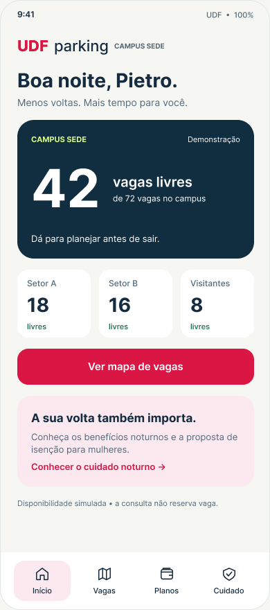
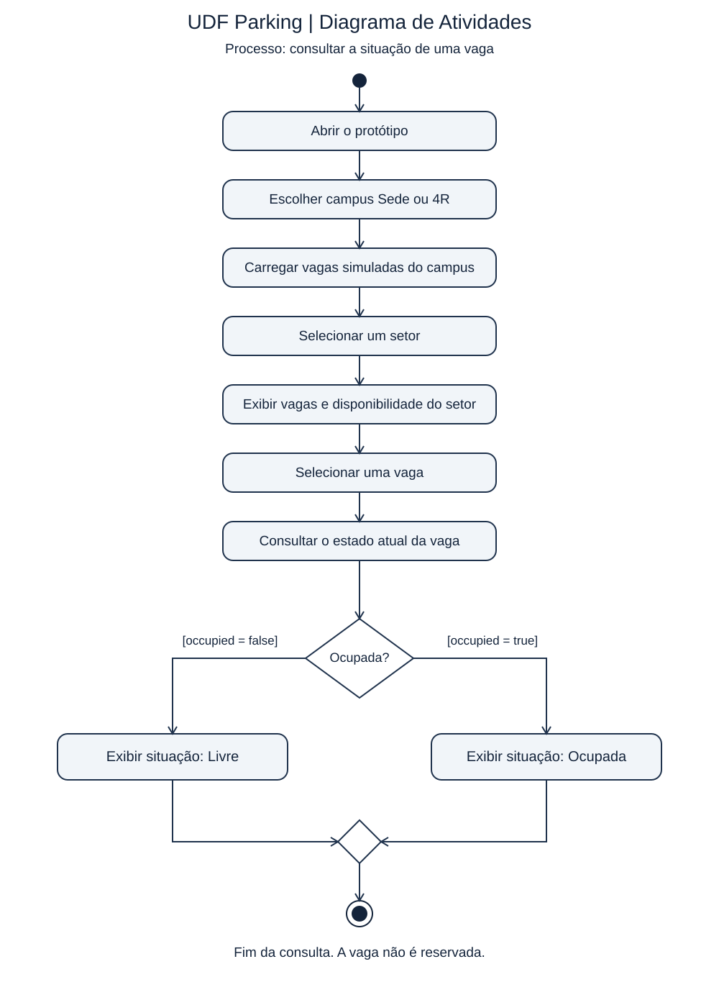
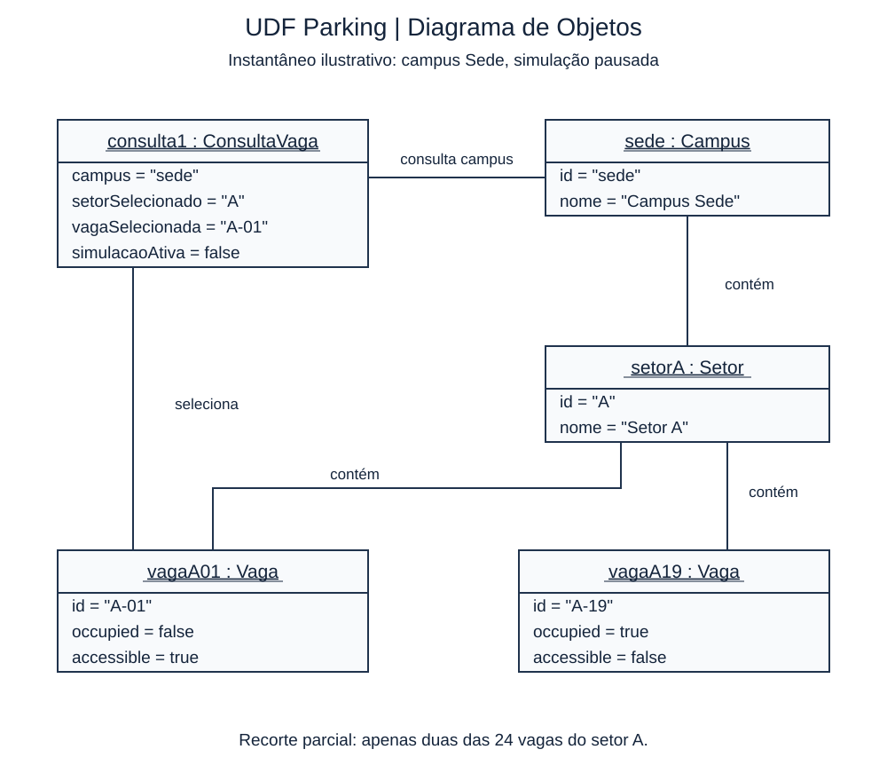

Antes de sair,
saiba o que esperar.
Consulta por setor e identificação da situação das vagas.
Menos voltas procurando vaga. Mais planejamento para chegar. Cuidado para voltar.

Chegar sem saber se há lugar, pagar diárias com frequência e estacionar longe à noite são dificuldades que orientam a proposta do UDF Parking.
O projeto reúne consulta de vagas, comparação de planos e benefícios noturnos para apoiar a rotina dos estudantes da UDF.
Entenda o projeto completoConsulta por setor e identificação da situação das vagas.
Propostas de planos mensais, bimestrais e semestrais.
Benefícios noturnos para estudantes e proposta de isenção para mulheres.
Leia os documentos, explore as decisões e acompanhe a construção da proposta.
Problema, público-alvo, objetivos e escopo.
Ler documentoElicitação e necessidades dos usuários.
Ler documentoO que é essencial, importante e futuro.
Ler documentoFluxos, instâncias e relação com a implementação.
Ler documentoTecnologias, cena 3D e simulação.
Ler documentoDocumentação original da experiência mobile.
Ler documentoMateriais e roteiro para demonstrar a solução.
Ler documentoRegistro acadêmico do desenvolvimento do projeto.
Ler documentoNenhum documento encontrado. Tente outra palavra.
Arquivo Word disponível para consulta e download.
As páginas de leitura preservam documentos de diferentes etapas. Menções a funcionalidades futuras e checklists devem ser interpretadas no contexto de cada registro.
Aula inaugural · Registro visual da Unidade 1 · Fonte PlantUML: atividades · Fonte PlantUML: objetos
Documentos copiados do repositório em 19/11/2026. Consulte o GitHub para versões posteriores.
Selecione um diagrama. Abra a imagem para visualizar todos os detalhes.
Fluxo de consulta da situação de uma vaga.

Um instante da consulta: campus, setor e vagas.

Atores e funcionalidades do sistema.

Interações ao longo do processo.

Estrutura e relacionamentos do modelo.

Problema, público e proposta de valor organizados em um só lugar.
Abrir Lean Canvas 2.0 Versão anterior
Dois protótipos complementares para apresentar a experiência.
No Figma, selecione “01 • Início” e clique em Apresentar para navegar pelas quatro telas.
Observe o estacionamento, consulte vagas simuladas e explore a movimentação dos veículos na demonstração.
Vídeo, slides e um roteiro curto para guiar a demonstração.
Interface mobile, navegação entre telas, modelos UML e uma maquete com simulação de vagas.
Planos com desconto e benefícios noturnos, incluindo isenção para mulheres, sujeitos à aprovação institucional.
Validar a experiência com estudantes, avaliar viabilidade e estudar uma fonte real de dados de ocupação.
Demonstração acadêmica. Vagas, preços e percursos são ilustrativos. Não há reservas, pagamentos, monitoramento real ou garantia de segurança.
Engenharia de Software · UDF